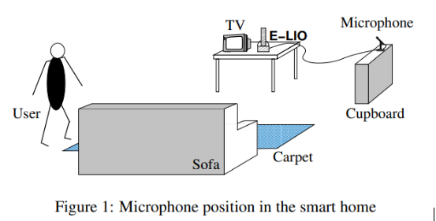
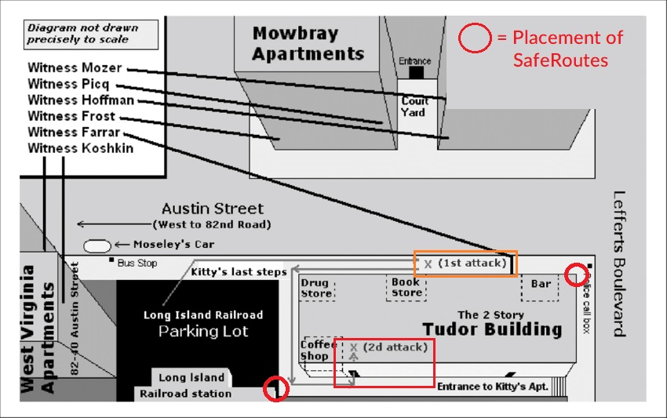

March 13th, 1964, a woman by the name of Kitty Genovese was walking home from her job at a local bar when she was attacked, raped and murdered. Tragically, during the 35 minutes of this attack while Kitty begged and pleaded for help, not one person came to her rescue or called the police, despite 38 residents in Kitty’s apartment hearing the attack. Her death led to the coining of the term “the bystander effect” - the social theory that asserts that people are less likely to provide help when there are other people present. While most of the residents were aware that an incident was occurring, their feelings of fear and apathy triumphed over Kitty’s need for help. Had someone given Kitty a fighting chance, had someone scared off the attacker, or had someone identified Kitty’s very real danger, her death may have been avoided. My project proposes a technological response to this issue, not only to combat the bystander effect, but to provide better safety for those who may not otherwise have access to it.
This project proposes the use and installation of small, discreet devices mounted on pre-existing structures, known as “SafeRoutes”. Placed like CCTV cameras, SafeRoutes would be located around high-risk areas such as dark parks, college campuses, and targeted areas of repeated sexual assault. Since 2020, sexual assault recorded in Australia has increased by 13 percent, with approximately 90 reported sexual assault attacks per year occuring outside of one’s home in Victoria alone. There has also been an increase in criminal incidents in and around parklands or reserves, and although there has been a decrease in street, lane, or footpath incidents, still 61 reported criminal incidents occurred in these laneways in 2022.
Unlike CCTV cameras, SafeRoutes would not visually monitor an area, but instead would use voice recognition technology to activate bright flood lights and sirens when prompted by certain known words of distress, such as “help” or “ah!” when coupled with ‘expressive speech’. In a study conducted by Varcher et al 2015, distant voice recognition technology, including expressive speech recognition, was investigated for use in “non-intimate” assisted living environments (Vacher et al., 2015). Varchar proposed the use of a single microphone attached to an AI to monitor a large room which would react to distress calls with the goal of providing reassurance and assistance to distressed elderly patients. In this study a wide range of predetermined “help” calls were used to activate a single microphone monitoring a large room. (Vacher et al., 2015) (Kesari, n.d.)
This was tested in 2015 by 43 elderly participants and 52 non-elderly participants by re-enacting falling down scenarios and verbal cues. The cues used an accumulation of 81 casual sentences, 31 vocal commands, and 58 distress sentences. These tests resulted in an accuracy of 74.2% of distress calls recognised by the AI software within a 2-meter radius of the microphone. (Vacher et al., 2015)
My proposal would use a similar methodology; once theSafeRoute device learns to detect the key distress words, it would trigger a response from the built-in alarm system. This alarm system would consist of a distinct pattern of flashing lights, such as a flood light with a red flicker, followed by a type of siren. The goal of these SafeRoutes is to startle the attacker and stop the attack, while also drawing attention to the area and providing a clear signal to alert others to the distress situation.
SafeRoute will incorporate a python script that will delete the recorded data stored on a SafeRoute every five minutes until the device is triggered (Shaik, 2020). When a SafeRoute device activates, it will store the activation time and date alongside the recording that caused the device to sound. This would ensure quality control of the device and would also act as a tool for investigating the crime SafeRoutes have intervened or witnessed. Because of this, SafeRoute locations will also be stored in its own app, which will be available to everyone,Those with the app to see the location of all SafeRoute devices and how often they have been triggered. This will allow the users to plan a route home that avoids certain locations of repeat activation or seek locations where the user is aware these devices are implemented. The SafeRoute app will also provide the user with the ability to comment on each device with notes and tags. These notes could be anything from malfunction reports, tips to other users about the area, or little thank you notes to a device when it has successfully interrupted an attack. From the perspective of the device manufacturer, the use of this app will assist in monitoring which locations are in need of more or less devices and adjusting the placement of SafeRoutes accordingly.
To accomplish this, an open-source text to speech software such as ESPnet or VOSK would be needed for the device to recognize speech. I've chosen ESPnet as it uses python language for its primary coding language, and VOSK because it can connect to a Raspberry Pi (SeventhQueen, 2020). A Raspberry Pi would be the main ‘hub’ of the device, as it can be used to control lighting and sound automation and can perform simple tasks in response to voice recognition (www.youtube.com, n.d.). The lights needed for this device would be a form of very bright LED or RGB; these can be purchased easily along with the Raspberry Pi. The output speaker for this device must be small but loud. For the purpose of a prototype, I will be using the MonkMakes amplified speaker kit. The initial construction of the device would be accomplished by building a Raspberry Pi, connecting it to a microphone and a piece of lighting hardware, and finally incorporating the speaker. The software would then be uploaded to the Raspberry Pi, allowing it to respond to the prespecified voice commands. Upon activation of the device, the lights and sound files it is programmed with will be automatically initiated.
The skills needed to implement this project would primarily include python coding, installation of software including a Raspberry Pi operating system, (Raspberrypi.org, 2017) knowledge of Raspberry Pi’s, and a basic knowledge of construction to piece everything together into a functional, polished product. For an initial prototype, all recourses could be found using open-source software. Down the line however, upgrades and modifications would need to be made to the initial creation of the design in order to accommodate for the use of SafeRoutes in the community.
Previously, sexual assault or stalking incidents have been addressed with other safety items such as features on your phone that allow you to quickly call the police, apps that allow you to connect with someone to talk with you as you walk home, or pieces of jewellery that you can activate to send a distress signal to a friend or law enforcement personnel. However, all these devices rely on the reaction of humans which often are subject to delay and misjudgement. SafeRoute devices can consistently activate by known sounds of distress coupled with a variety of key words, and do not respond with fear or hesitation.
Implementation of such a device in any public space does not come without its limitations. One of the key aspects we would need to be able to overcome, or consider, is the error margin in AI-recognition of distress calls. Considering in preliminary tests as per (), the voice recognition AI was effectively able to identify a distress signal 74 percent of the time. However, what does that mean for the other 26 percent? We are to assume that in a real-world application, if someone were calling out for help and the device did not recognize their call, what kind of fault, if any, could be placed on the product or even the company itself? The radius of speech recognition is also a crucial factor to consider; further testing of the distance at which such speech recognition technology becomes inaccurate is crucial. If proven to be too small, an evaluation of the viability for use in large areas such as parks or Universities would be required. Another foreseeable limitation is unwanted noise pollution created by this device, especially in residential areas. If a device, like the one proposed, is placed in a residential park, noise pollution would have to be qualitatively and quantitatively measured, to determine the most effective placements to minimize excessive disturbances in the surrounding communities. This would be tested through an assessment emission of the decibel output desired for the product, supplemented with a survey distributed to the local residents. Furthermore, since this product's siren is triggered by voice activation, it can be foreseen that this design could lead to misuse and false alarms caused by people intentionally trying to trigger the device. Using the saved recordings stored when a SafeRoute device triggers, we may be able to place signage to ward off the misuse of these devices with the idea that they are recorded. The last main limitation I can foresee with this product is concerns regarding privacy. People may become agitated, believing that this device is a sort of “big-brother” alternative. To combat this, it would be important that voice recordings are not stored unless the device is triggered; this will assist in the overall design as it will allow the device to be constructed much smaller.
If this project were successful, it could be used to improve the safety of public areas with the potential to reduce homicide and sexual assault rates in high-risk areas. It is unlikely that this product is a complete fix for such events, however, SafeRoute hopes to provide a service to dissuade attacks and an opportunity for victims to seek help. This service would be simple to install, run, and maintain, making it an affordable and viable option for implementation by local councils, schools, and apartment complexes. Ultimately, this product would be manufactured to be placed just far enough away from each other to cover the radius needed so that any area was just that much safer. SafeRoutes have the potential to address a very real, very scary situation many women and men experience almost daily and may help to reduce the number of sexual abuse and homicide cases that occur in public spaces in Australia, and potentially, even beyond.